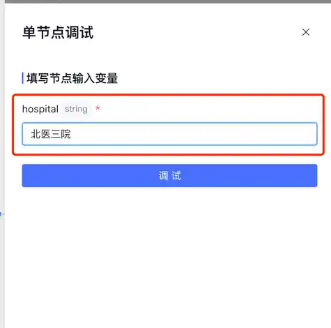
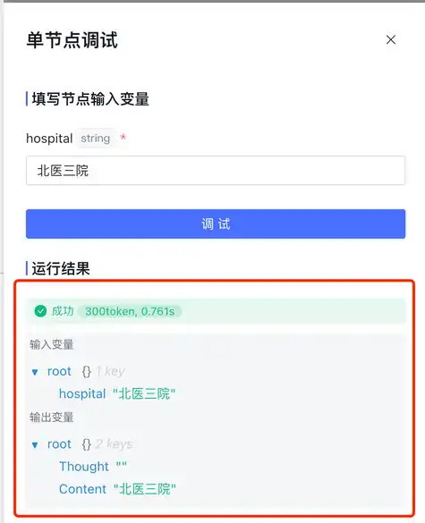

第六章｜项目制作与答辩 · 第26次课 · 4学时（2次答辩）
小流程改造项目答辩
00 知识回顾
五次制作课完成了同一个小流程项目。现在用材料、运行结果与本人操作说明作品怎样工作，不用宣传语代替演示。
01 任务预告
本课成果： 完成一次小组演示和个人回答。两次答辩课按学习通分组序号分前、后半组展示；提前准备同一版本的材料与流程。
展示内容： 一份正常输入、一个关键操作、一份结果、一个相关异常样例，以及每人负责的部分。无代码与分步AI作品均可，实际采用哪种方式就如实展示哪种方式。
02 基础概念
1｜现场复现：从材料开始说明方法
现场复现是按项目中的步骤处理材料，让别人看见输入怎样变成结果。结果图可以帮助讲解，但不能替代关键操作或把预先做好的样例说成刚生成。
例子： 先展示四条咨询，运行分类，打开分类结果，再说明怎样生成回复；不是一上来只展示回复成品。
2｜解释结果：指向材料和规则
解释是说出结果依据与实际操作。回答“为什么分类为资料不足”时，可以指向缺少开票规则；不需要背很多AI名词。
例子： “接口写USB-C，因为材料里的Type-C与USB-C表达相同”，比“模型进行了智能归一化赋能”更清楚。
3｜演示受阻：说明卡点和已有证据
网络、额度或节点错误可能使现场不能完成。先指出真实卡点，再用此前的输入输出和关键图解释已完成部分；不要编造一次成功运行。软件错误、任务设计问题和内容错误要区分。
例子： 模型权限不足是运行条件问题；引用错节点是配置问题；回复捏造保修条款是内容规则问题。
03 核心案例
教师示范｜用六分钟讲清咨询整理作品
课堂模拟演示： 台灯咨询“几档亮度、是不是Type-C、能开票吗”；材料只有三档亮度、USB-C供电，没有开票条款。
| 时间安排 | 展示动作 |
|---|---|
| 第1分钟 | 说使用者与用途，打开原始咨询材料 |
| 第2—4分钟 | 输入材料，展示分类节点与回复结果；生成等待时打开已准备样例讲解 |
| 第5分钟 | 用“能开票吗”展示资料不足处理 |
| 第6分钟 | 每人说明负责的一步，回答一个具体问题 |

调试输入位置显示本次实际送进节点的值，可以据此解释材料怎样进入流程。

运行详情同时列输入变量与输出变量；Content是输出内容，Thought是另一个字段。
讲解时指向这三个位置
第一，输入材料有没有给出规则；第二，模型节点实际拿到什么；第三，最终回复是否据此生成。演示时点开一个关键节点就够，不必把全部配置逐字念出来。

选中一次回复，画布显示对应路径；点关键节点查看当次输入输出。
回答样例： “开票问题没有对应资料，所以我们让流程提示补商家说明。第二步只读取分类结果和给定资料；我负责这条规则与异常测试。”这是说明依据和分工，不宣称实现了真实客服系统。
案例来源： 元器调试说明展示节点输入输出与路径的查看方法；项目内容是课堂模拟。
04 实践任务｜两次答辩课完成展示
展示前：准备四个可立即打开的内容
打开正常材料、工作流或分步对话、最终成果、异常测试结果。给每人分配一个可操作的步骤；展示采用冻结版本，不临时替换材料与功能。
展示时：按同一个顺序说明
- 用途与材料： 谁会用，输入是什么，原来怎样处理。
- 正常运行： 现场操作关键步骤，指出材料怎样进入AI、结果在哪里。
- 异常处理： 展示一份与本任务相关的缺失、冲突或范围外材料，说明实际处理。
- 本人贡献： 每人完成自己负责的一步，解释一次选择或修改。
两次答辩分别覆盖前、后半组；每组以六分钟演示为目标。等待生成时讲已准备样例，现场新结果出现后再指出它，避免把等待时间全部花掉。
回答会围绕这些问题
| 问题 | 用什么来回答 |
|---|---|
| 哪一步需要AI？ | 流程图中的一个具体动作 |
| 下一步读了什么？ | 节点变量或手动复制的中间结果 |
| 材料不够时怎样处理？ | 一条实际异常输入与对应结果 |
| 你改过什么？ | 一次规则、材料或节点配置修改 |
| 你负责哪一部分？ | 本人操作及对应过程证据 |
如果现场没有跑完
保留报错或等待状态，说明卡在哪个节点、已有哪份结果、下一步准备怎样解决。用冻结版图和测试记录说明已有工作，不重新编写一份“成功记录”。
成果：完成小组演示与个人回答，保留项目最终版本。 答辩发现的改进可以在原有项目记录里补充，不另加一份重复过程报告。
05 本课总结
本课程最后留下的是一条能解释、能复用的小流程：输入有依据，处理动作清楚，结果能使用，遇到不合适的材料知道怎样处理。
课程收束： 保存项目材料、规则与关键结果，后续遇到同类任务时替换输入并按实际情况调整。只有真正完成并运行过的功能，才写进作品介绍。